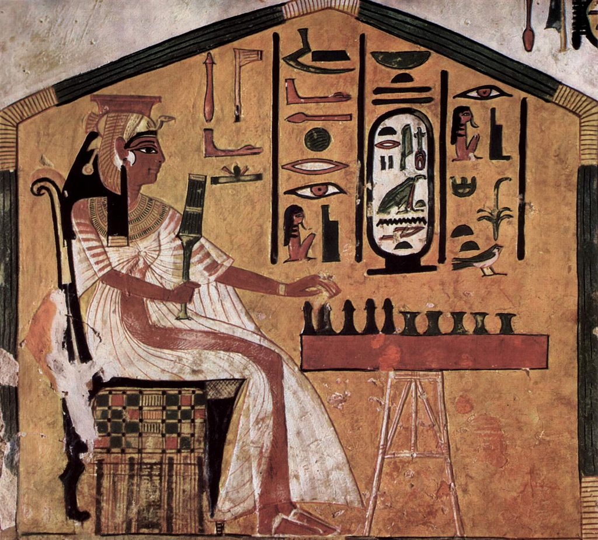
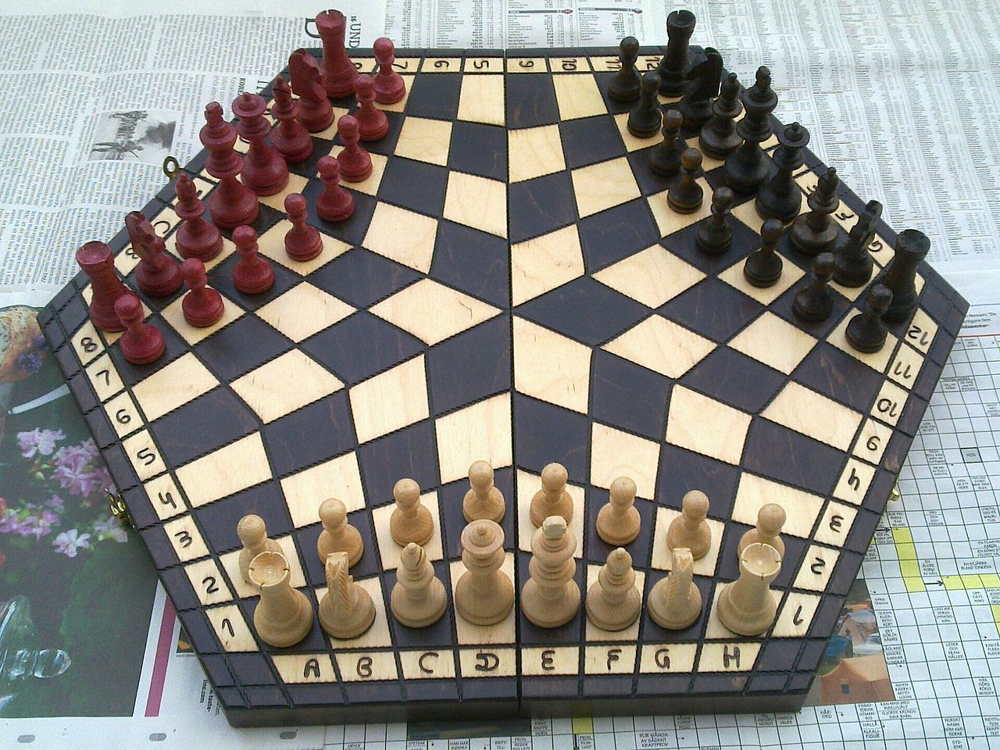

Настольная игра— игра, основанная на манипуляции относительно небольшим набором предметов,
которые могут целиком разместиться на столе или в руках играющих. В число настольных игр входят игры со специальным полем, карточные игры, кости, солдатики и другие. Игры данной категории, в отличие от спортивных и видеоигр, не требуют активного перемещения игроков, наличия дополнительного технически сложного инвентаря
или специальных сооружений, игровых площадок, полей.
По всей видимости, одной из древнейших настольных игр были различные варианты игры в кости. Во всяком случае, игральные кубики, выточенные из камня или из кости, неотличимые от сегодняшних игральных костей, находили уже в раскопах пятитысячелетней давности. Среди археологических находок попадались и ранние, примитивные варианты игральных костей — не вполне правильной формы, а иногда даже цельные мелкие камешки или кости, на сторонах которых резьбой или краской указаны очки. Кости до наших дней продолжают существовать как отдельная азартная игра, но их основное применение — в качестве вспомогательного элемента множества настольных игр, для моделирования элемента случайности.
Другой, несколько менее популярный, но появившийся в те же времена вариант игральных костей — плоские деревянные палочки, которые с одной из сторон окрашивались и/или снабжались резным узором. Как и игральные кости, при игре палочки брали в ладонь и бросали на стол. Подсчитывали число палочек, упавших окрашенной стороной вверх. Таким образом можно было получить случайное число очков от нуля до любого нужного максимума (определявшегося количеством палочек).
Из известных, но не доживших до нашего времени настольных игр древнейшей, видимо, является сенет, имевший хождение в Древнем Египте в 4-м тысячелетии до нашей эры. О сенете узнали в XIX веке по рисункам в гробницах египетских фараонов. Из-за недостатка информации, а также характерной для Египта «плоской» рисовки, создававшей неверное представление об истинном облике игры, некоторые исследователи идентифицировали найденную игру с шахматами, поспешно заключив, что именно Египет является родиной шахмат, но очень скоро это заблуждение было опровергнуто. Правила сенета неизвестны в точности. Предполагается, что это была игра шашечного типа; варианты правил, которыми сопровождаются выпускаемые сейчас игровые комплекты, являются современной реконструкцией.
В третьем тысячелетии до нашей эры на Ближнем Востоке были созданы нарды — игра шашечного типа, сохранившаяся до сих пор, хотя и в несколько изменённом виде. К тому же периоду относится «Королевская игра Ур», названная так по имени города Ур, в одной из гробниц которого игра была обнаружена археологами. Эта игра оспаривает у нард звание «самой долгоживущей настольной игры» после того, как студент Ирвинг Финкель обнаружил свидетельства того, что та же игра, практически в неизменном виде, до сих пор в ходу в Индии.
Второе тысячелетие до нашей эры ознаменовалось появлением в древнем Китае оригинальных настольных игр, из которых одни прочно забыты, а в другие продолжают играть и сегодня. К первым относится любо — загадочная игра, известная лишь по нескольким археологическим находкам и единичным упоминаниям в исторических документах. Согласно имеющимся реконструкциям, она объединяла азартную игру с гадательными практиками, что делает её уникальной. Гораздо более известны сохранившиеся по сей день в практически неизменном виде го и го-моку — игры шашечного типа, в которых фишки не передвигаются по доске, а лишь выставляются и убираются с неё. Известно также тибетское го, но до сих пор нет ясности — было ли оно предшественником го, или его местным вариантом.
Очень мало сведений о происхождении семейства игр манкала (игра в зёрна). По разным предположениям, эти игры появились от трёх тысяч до тысячи лет назад, их различные варианты до сих пор в ходу в Африке, на Ближнем и Среднем Востоке и даже в Южной и Центральной Америке. В частности, к этому семейству относятся игры калах, вари, тогуз коргоол, чонгкак. Механизм всех этих игр заключается в перемещении «зёрен» между лунками, расположенными на игровом поле в несколько рядов, с целью захвата всех зёрен противника либо лишения его возможности хода.
К первому тысячелетию до нашей эры относятся и самые старые известные настольные игры шашечного типа в Европе — древнегреческая петтейя (petteia, pessoí, psêphoi, или pente grammaí) и древнеримская латрункули (latrunculi).